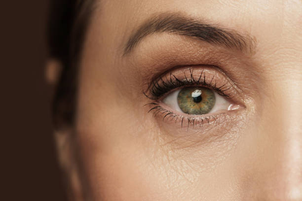

UNDERSTANDING EYELID INFLAMMATION, BLOCKED GLANDS AND TREATMENT OPTIONS
Blepharitis and chalazion are very common eyelid conditions. They are closely related, and many people who develop chalazia have an underlying tendency towards eyelid inflammation.
The good news is that with the right routine and treatment approach, symptoms can usually be well controlled.

What is blepharitis?
Blepharitis is inflammation of the eyelid edges, particularly around the eyelashes and the tiny oil glands (meibomian glands) that help keep the eye surface healthy.
Many people have mild blepharitis without knowing it.
Symptoms can include:
- Red eyelid margins
- Crusting or flakes around eyelashes
- Itchy or irritated eyelids
- Swollen eyelids on waking
- Discomfort when blinking
Symptoms often come and go. You may have quiet periods followed by flare-ups.
What is a chalazion?
A chalazion is a blocked meibomian gland inside the eyelid.
The glands normally release oil onto the eyelid margin. If the gland becomes blocked, the oil becomes trapped and triggers inflammation.
A chalazion:
- Is usually an inflammatory problem rather than an infection
- Develops within the eyelid tissue
- Cannot simply be squeezed or popped like a spot
It may start as general swelling before becoming a more obvious lump.
I think I am developing a chalazion — what should I do?
Early treatment gives the best chance of settling the inflammation.
Start: Warmth → Massage → Wipe
1. Warmth
Use a clean muslin cloth with warm water.
Place it over your closed eyelid for around 5 minutes.
During an active flare:
- Repeat around 5 times daily
The warmth helps soften the blocked gland contents.
2. Massage
After warming:
- For the upper lid: roll your fingertip downwards towards the eyelashes
- For the lower lid: roll your fingertip upwards towards the eyelashes
The key is to roll, not drag the skin.
3. Wipe
Gently wipe along the eyelid margin with a clean cloth.
This removes oil secretions and debris.
Daily maintenance routine
Once your symptoms settle, continue eyelid hygiene once or twice daily.
Many people find evening is best because the eyelids are less active overnight.
A simple bedtime routine:
- Remove contact lenses and makeup
- Warm eyelids
- Massage glands
- Wipe eyelid margins
Consistency is more important than perfection.
How can I fit eyelid hygiene into a busy life?
The best routine is one that fits naturally into your day.
You can combine it with:
- Showering
- Exercise
- Yoga
- Bathing
- Steam room
For example, after exercise your body is already warm. Use your shower time to warm and massage your eyelids, then wipe away any secretions afterwards.
This avoids creating another separate task in your day.
What if warm compresses are not working?
If you have been doing regular warm compresses but after a few days:
- The lump is getting bigger
- Redness is increasing
- Discomfort is worsening
- The eyelid is becoming more swollen
then further treatment may be needed.
A chalazion is usually not an infection, so antibiotics alone are not usually the solution.
The main problem is inflammation.
Medical treatment
An ophthalmologist may prescribe an ointment containing anti-inflammatory medication (often combined with antibiotic cover).
This aims to:
- Reduce swelling and redness
- Calm inflammation
- Reduce bacterial overgrowth around the eyelid
The ointment is usually applied:
- To the outside of the eyelid
- And to the inner eyelid surface where appropriate
Steroid injection
When might this be considered?
Steroid injection can be useful when a chalazion:
- Repeatedly flares up and settles
- Remains itchy or uncomfortable
- Is not very visible but keeps causing symptoms
- Needs rapid calming before an important event like a wedding or presentation
What happens during steroid injection?
The procedure is performed in clinic.
- The eye surface is numbed with drops
- A small amount of steroid is injected around the eyelid lump
- The procedure takes only a few seconds
You may notice:
- Brief stinging
- Temporary swelling at the injection site
Most patients do not develop bruising.
You can usually go home afterwards without an eye patch.
Chalazion surgery
If the lump becomes:
- Firm
- Persistent
- Well-defined
- No longer responding to medication
then surgery may be the most effective option.
The procedure is called: Incision and curettage of a chalazion
It is usually:
- A day-case procedure completed under local anaesthetic inside 10–15 minutes
The incision is usually made on the inside of the eyelid, so there is no visible external scar.
The blocked material is removed, and the eyelid is allowed to heal.
Frequently Asked Questions
Is a chalazion an infection?
Usually no. A chalazion is mainly caused by a blocked oil gland and inflammation. Infection can occasionally occur, but it is not the primary cause.
Can I pop a chalazion?
No. Unlike a spot on the skin, a chalazion sits deep within the structural eyelid tissue and cannot be squeezed out. Squeezing it will intensify the irritation.
How long does a chalazion take to go away?
Every case varies. Some settle within a few weeks, while others can take months. Treatment adjustments depend entirely on size and impact on daily life.
Should I continue eyelid hygiene after it improves?
Yes. Blepharitis is typically a chronic, long-term tendency. Regular maintenance reduces the likelihood of future flare-ups.
When should I seek specialist advice?
Consider an ophthalmology assessment if:
- The lump fails to improve despite consistent hygiene routines
- Symptoms interfere with your daily comfort
- The chalazion keeps recurring
The key message
Blepharitis and chalazion are common, highly manageable conditions.
The ultimate aim is to:
- ✓ Keep eyelid glands clean and healthy
- ✓ Intervene early to control inflammation
- ✓ Prevent repeated, painful flare-ups
A personalized approach offers the most reliable long-term outcome.